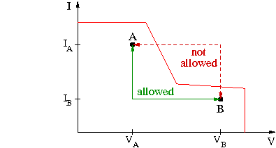

Current clamp handling
If the values of a DPS set are changed or if the active DPS set is switched, there may be not only a voltage, but also a current limit change. Whether the current limit is changed before or after the voltage ramp, depends on the direction of the voltage change.
Some DPS types have a power-derating curve. The graphic below shows such a curve.

The operating point of the DPS must always lie below the red line, otherwise the maximum power of the DPS would be exceeded.
If the DPS is in point A and should go to point B, then the current limit must be changed first to IB, before the voltage ramp from VA to VB can be executed. But if the DPS is in point B and should go to point A, then the voltage ramp from VB to VA must be executed first, before the current clamp can be changed to IA.
The firmware ensures, that it's always on the safe side of a power derating curve. It does not actually check, whether a power limit violation would occur or not. It always executes a voltage ramp with the current limit of the higher absolute voltage. That is, if the absolute value of the output voltage is increased, then the current limit is switched before the voltage ramp. If the value is decreased, then the current limit is switched after the voltage ramp.
Functional changes
- Introduced in SmarTest 7.1.0